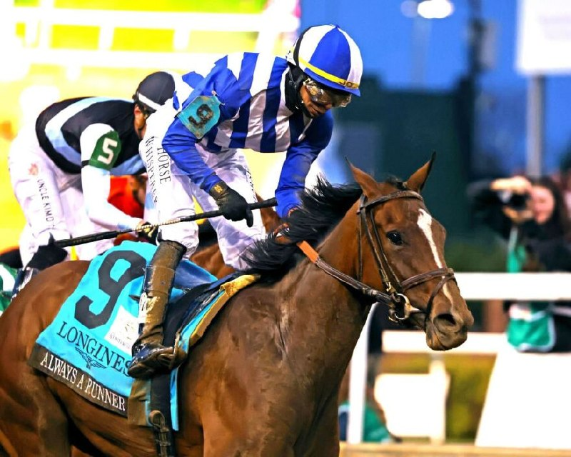

José Ortiz se convierte en el noveno jockey en firmar el doblete Oaks-Derby
El jinete portorriqueño José Ortiz se ha incorporado a una lista exclusiva de la historia del turf estadounidense tras ganar este fin de semana en Churchill Downs el Kentucky Oaks y el Kentucky Derby en menos de veinticuatro horas. Con la victoria del sábado a lomos de Golden Tempo en la 152ª edición del Derby,…

El jinete portorriqueño José Ortiz se ha incorporado a una lista exclusiva de la historia del turf estadounidense tras ganar este fin de semana en Churchill Downs el Kentucky Oaks y el Kentucky Derby en menos de veinticuatro horas. Con la victoria del sábado a lomos de Golden Tempo en la 152ª edición del Derby, después de la conquista del Oaks la noche del viernes con Always a Runner, Ortiz se convierte en el noveno jockey de la historia en firmar la combinación conocida en el sector como Oaks-Derby Double. La última vez que un jinete había logrado el mismo doblete había sido en 2024, con Brian Hernández Jr.
El Oaks del viernes con Always a Runner
Always a Runner abrió el doblete del fin de semana con su victoria en la 152ª edición del Kentucky Oaks, primera de la historia disputada bajo focos en horario de máxima audiencia televisiva. La potranca de tres años, hija de Gun Runner y entrenada por Chad Brown, completó el recorrido de milla y un octavo en 1 minuto y 48,82 segundos para imponerse por una largura y cuarto a Meaning, ganadora previa del Santa Anita Oaks, mientras Counting Stars cerraba el cajetín de honor en tercer puesto. La cuota de la ganadora, que partía como tercera favorita, se cerró en 5 a 1.
La actuación supuso el primer Kentucky Oaks de la trayectoria de Chad Brown como entrenador, pese a que el preparador acumula uno de los palmareses más completos del circuito americano sobre hierba. Para José Ortiz era el segundo Oaks de su carrera, después de aquella victoria con Serengeti Empress en 2019. Always a Runner mantiene además un registro de tres victorias en otros tantos arranques, defendiendo los colores de la sociedad formada por Douglas Scharbauer y Three Chimneys Farm.
La noche del viernes resultó especialmente productiva para Ortiz, que cerró la jornada con cinco victorias en el programa de Churchill Downs, culminándola con el triunfo en la prueba estelar.
El Derby del sábado con Golden Tempo
Veinticuatro horas después, José Ortiz volvió a la línea de meta en cabeza, esta vez en la 152ª edición del Kentucky Derby a lomos de Golden Tempo, ejemplar entrenado por Cherie DeVaux y partido a 23 a 1. El binomio se impuso por una largura tras una remontada en la recta final, dejando segundo al favorito Renegade y tercero a Ocelli. La victoria convirtió además a DeVaux en la primera mujer entrenadora de la historia ganadora del Derby.
Para Ortiz, el triunfo en el Derby tenía un significado particular: era su primera victoria en la prueba después de varios intentos en los que había rozado el éxito sin alcanzarlo. El jinete había finalizado segundo en 2018 con Good Magic, derrotado por Justify, y tercero en 2019 con Tacitus, en la edición que terminó con la descalificación histórica de Maximum Security y el triunfo de Country House.
El Oaks-Derby Double en la historia
El doblete Oaks-Derby es uno de los hitos más singulares del calendario clásico estadounidense, condicionado por la coincidencia de tener montas competitivas en dos pruebas distintas en jornadas consecutivas y, además, ganarlas. La ventana en la que un jinete dispone de la doble oportunidad es de poco más de veinticuatro horas, lo que explica que en los 152 años de historia común de ambas pruebas solo nueve jinetes lo hayan conseguido.
Entre los precedentes verificables del doblete figuran Eddie Arcaro en 1952 (Real Delight en el Oaks y Hill Gail en el Derby), Don Brumfield en 1966 (Native Street y Kauai King), Jerry Bailey en 1993 (Dispute y Sea Hero), Calvin Borel en 2009 (Rachel Alexandra y Mine That Bird) y, más recientemente, Brian Hernández Jr. en 2024, año del 150º aniversario, con Thorpedo Anna y Mystik Dan. Entre Arcaro y Hernández Jr. han transcurrido siete décadas en las que la hazaña apenas se ha repetido en una decena de ocasiones combinando jockeys, entrenadores y propietarios.
Una temporada que continúa
Tras el doblete de Churchill Downs, José Ortiz figurará entre los nombres llamados a defender el liderazgo del jinete ganador del Derby en las siguientes citas de la Triple Corona estadounidense. Las Preakness Stakes se disputan el 16 de mayo en Pimlico (Maryland) y las Belmont Stakes el 6 de junio en Saratoga (Nueva York), sede provisional de la prueba mientras Belmont Park atraviesa su periodo de obras. Always a Runner, por su parte, tiene previsto trasladarse a Saratoga durante el verano para preparar las pruebas de Grupo I sobre tierra de la categoría de tres años, con el Coaching Club American Oaks del 25 de julio como primer objetivo señalado por su entrenador.
— Redacción de Galope al Día